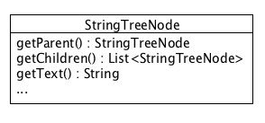
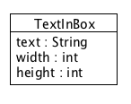
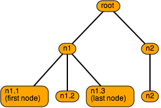
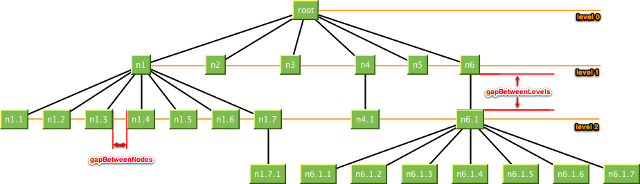
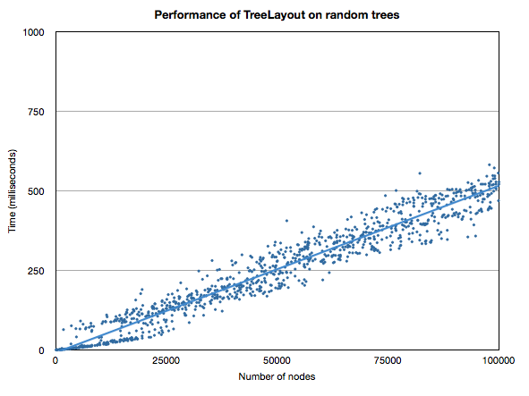

-
Interface Summary Interface Description Configuration<TreeNode> Used to configure the tree layout algorithm.NodeExtentProvider<TreeNode> Provides the extent (width and height) of a tree node.TreeForTreeLayout<TreeNode> Represents a tree to be used by theTreeLayout. -
Class Summary Class Description TreeLayout<TreeNode> Implements the actual tree layout algorithm.TreeLayout.DumpConfiguration -
Enum Summary Enum Description Configuration.AlignmentInLevel Possible alignments of a node within a level (centered, towards or away from root)Configuration.Location Identifies the sides of a rectangle (top, left, ...)
Package org.abego.treelayout Description
Introduction
The TreeLayout creates tree layouts for arbitrary trees. It is not restricted to a specific output or format, but can be used for any kind of two dimensional diagram. Examples are Swing based components, SVG files, and many more. This is possible because TreeLayout separates the layout of a tree from the actual rendering.
To use the TreeLayout you mainly need to supply an instance of the
TreeLayout class with the nodes of the tree (including "children"
links), together with the "size" of each node. In addition you can configure
the layout by specifying parameters like "gap between levels" etc..
Based on this information TreeLayout creates a compact, nice looking layout. The layout has the following properties [2]:
- The layout displays the hierarchical structure of the tree, i.e. the y-coordinate of a node is given by its level. (*)
- The edges do not cross each other and nodes on the same level have a minimal horizontal distance.
- The drawing of a subtree does not depend on its position in the tree, i.e. isomorphic subtrees are drawn identically up to translation.
- The order of the children of a node is displayed in the drawing.
- The algorithm works symmetrically, i.e. the drawing of the reflection of a tree is the reflected drawing of the original tree.
Here an example tree layout:

Usage
To use the TreeLayout you will create aTreeLayout instance with:
- a tree, accessible through the
TreeForTreeLayoutinterface, - a
NodeExtentProvider, and - a
Configuration.
getNodeBounds.
TreeForTreeLayout
The TreeLayout works on any kind of tree and uses theTreeForTreeLayout
interface to access such a tree.
To use the TreeLayout you therefore need to provide it with a TreeForTreeLayout
implementation. In most situations you will not need to deal with all details
of that interface, but create an implementation by extending
AbstractTreeForTreeLayout, or even use the class
DefaultTreeForTreeLayout directly.
Example: Extending AbstractTreeForTreeLayout
Assume you have a tree consisting of nodes of type StringTreeNode:

As StringTreeNode provides the children in a list and you can get the parent for
each node you can extend AbstractTreeForTreeLayout to create your
TreeForTreeLayout implementation. You only need to implement two methods and
the constructor:
public class StringTreeAsTreeForTreeLayout extends
AbstractTreeForTreeLayout<StringTreeNode> {
public StringTreeAsTreeForTreeLayout(StringTreeNode root) {
super(root);
}
public StringTreeNode getParent(StringTreeNode node) {
return node.getParent();
}
public List<StringTreeNode> getChildrenList(StringTreeNode parentNode) {
return parentNode.getChildren();
}
}
(Make sure to check out the performance constraints of getChildrenList and getParent.)
Example: Using the DefaultTreeForTreeLayout
Assume you want to create a tree with TextInBox items as nodes:

As you have no own tree implementation yet you may as well use
DefaultTreeForTreeLayout to create the tree:
TextInBox root = new TextInBox("root", 40, 20);
TextInBox n1 = new TextInBox("n1", 30, 20);
TextInBox n1_1 = new TextInBox("n1.1\n(first node)", 80, 36);
TextInBox n1_2 = new TextInBox("n1.2", 40, 20);
TextInBox n1_3 = new TextInBox("n1.3\n(last node)", 80, 36);
TextInBox n2 = new TextInBox("n2", 30, 20);
TextInBox n2_1 = new TextInBox("n2", 30, 20);
DefaultTreeForTreeLayout<TextInBox> tree =
new DefaultTreeForTreeLayout<TextInBox>(root);
tree.addChild(root, n1);
tree.addChild(n1, n1_1);
tree.addChild(n1, n1_2);
tree.addChild(n1, n1_3);
tree.addChild(root, n2);
tree.addChild(n2, n2_1);
This will create a tree like this:

NodeExtentProvider
TreeLayout also needs to know the extent (width and height) of each node in the tree. This information is provided through theNodeExtentProvider.
If all nodes have the same size you can use a FixedNodeExtentProvider
instance with the proper width and height.
In general you will create your own NodeExtentProvider implementation.
Example
Assume you want to create a tree with TextInBox items as nodes:
Here each node contains its width and height. So your NodeExtentProvider may look like this:
public class TextInBoxNodeExtentProvider implements
NodeExtentProvider<TextInBox> {
@Override
public double getWidth(TextInBox treeNode) {
return treeNode.width;
}
@Override
public double getHeight(TextInBox treeNode) {
return treeNode.height;
}
}
Configuration
You can use aConfiguration to customize various aspects of the
TreeLayout:
- the gap between levels,
- the minimal gap between nodes,
- the position of the root node,
- the alignment of smaller nodes within a level.
DefaultConfiguration class will be sufficient.
Root Position
By default the root of the tree is located at the top of the diagram. However one may also put it at the left, right or bottom of the diagram.
| Top (Default) | Left | Right | Bottom |
|---|---|---|---|
|
 |
 |
 |
See getRootLocation.
Alignment in Level
By default all nodes of one level are centered in the level. However one may also align them "towards the root" or "away from the root". When the root is located at the top this means the nodes are aligned "to the top of the level" or "to the bottom of the level".
| Center (Default) | TowardsRoot ("top of level") | AwayFromRoot ("bottom of level") |
|---|---|---|
 |
 |
 |
Alignment in level when root is at the left:
| Center (Default) | TowardsRoot ("left of level") | AwayFromRoot ("right of level") |
|---|---|---|
 |
 |
 |
Of cause the alignment also works when the root is at the bottom or at the right side.
SeegetAlignmentInLevel.
Gap between Levels and Nodes
The gap between subsequent levels and the minimal gap between nodes can be configured.

See getGapBetweenLevels and
getGapBetweenNodes.
Examples
In the "demo" package you will find examples using the TreeLayout.- SVGDemo - Demonstrates how to use the TreeLayout to create a tree diagram with SVG (Scalable Vector Graphic)
- SwingDemo - Demonstrates how to use the TreeLayout to render a tree in a Swing application
Performance
Based on Walker's algorithm [1] with enhancements suggested by Buchheim, Jünger, and Leipert [2] the software builds tree layouts in linear time. I.e. even trees with many nodes are built fast. Other than with the Reingold–Tilford algorithm [3] one is not limited to binary trees.The following figure show the results running the TreeLayout algorithm on a MacBook Pro 2.4 GHz Intel Core 2 Duo (2 GB Memory (-Xmx2000m)). The variously sized trees were created randomly.

The picture illustrates the linear time behavior of the algorithm and shows the applicability also for large number of nodes. In this setting it takes approx. 5 µs to place one node.
License
TreeLayout is distributed under a BSD license of abego Software. (License text)Sponsor
The development of TreeLayout was generously sponsored by Terence Parr "The ANTLR Guy" (parrt at cs dot usfca dot edu).References
[1] Walker JQ II. A node-positioning algorithm for general trees. Software—Practice and Experience 1990; 20(7):685–705.[2] Buchheim C, Jünger M, Leipert S. Drawing rooted trees in linear time. Software—Practice and Experience 2006; 36(6):651–665
[3] Reingold EM, Tilford JS. Tidier drawings of trees. IEEE Transactions on Software Engineering 1981; 7(2):223–228.
- Author:
- Udo Borkowski (ub@abego.org)